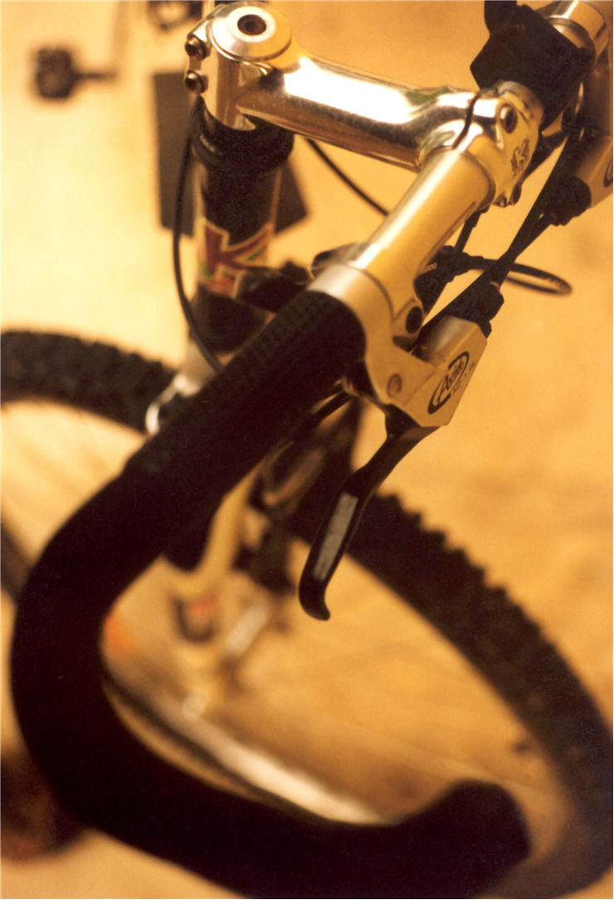

Bianchi Bicycles this is the oldest bicycle manufacturer that is still in business.
Bianchi Bicycles was established by Edoardo Bianchi in Milan, Italy in 1885.
Cannondale (Cannondale Bicycle Corporation)US manufacturer who has made name for its self by producing
bicycles of all types, ranging from urban, recreational, mountain, and high-end professional bicycles.